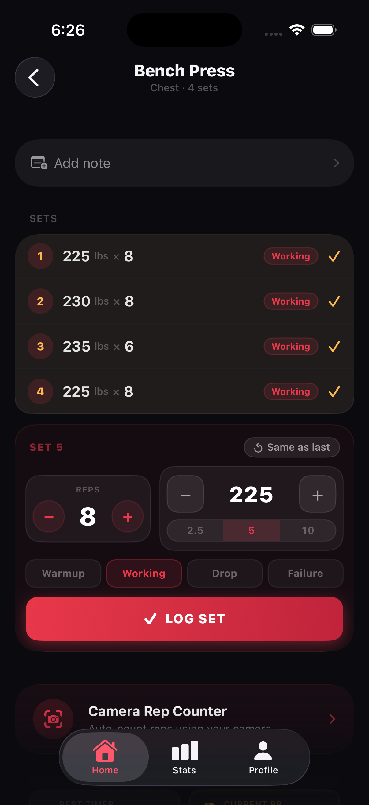

Screen 2: Quick Logging (with real app screenshot)
Logging Feature Screen

Log Sets in Seconds
The fastest way to track your lifts
⚡
Tap to Log
Reps, weight, set type — done in one tap
🔄
Auto-Remembers
Pre-fills your last weights and reps
📋
Templates
Start workouts with one tap from saved templates
Continue
Design Breakdown
1
Real app screenshot inside a phone frame with rounded corners, subtle border glow, and glass reflection overlay. Shows the actual UI the user will see.
2
Elongated active dot page indicator at top — same style as the Highlights gallery. Shows progress through 8 screens.
3
Feature bullets with icon boxes — colored backgrounds matching the feature's accent (red for logging, gold for memory, blue for templates). Title + subtitle per bullet.
4
Gradient CTA — red→orange with top shine, consistent with all other primary buttons in the app.
5
Subtle red tint radial gradient on the background — each screen gets its own tint color (blue for camera, gold for PRs, etc.).